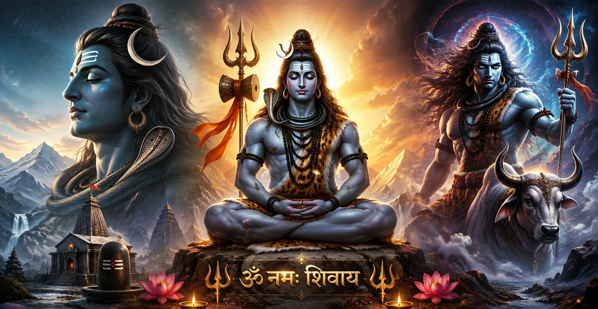

Mahadeva
মহাদেব
Mahadeva means the Great God or Great Lord. It is one of the most exalted names by which Shiva is lovingly remembered and worshipped. The name directs the mind toward His supreme greatness and divine presence.

Lord Shiva is remembered by countless sacred names and contemplated through many divine forms. Each name can open a different door of devotion, while each form invites the heart and mind to contemplate another dimension of Mahadeva.
The devotee may approach Shiva as the compassionate Bholenath, the majestic Mahadeva, the powerful Rudra, the auspicious Shankara, the cosmic dancer Nataraja, the teacher Dakshinamurti, the Lord of beings as Pashupati, or through many other sacred manifestations. These names and forms enrich the devotional relationship with Shiva without reducing the mystery of the Divine to a single image.
The many names of Shiva are not merely a collection of titles. They preserve devotional memories, divine qualities, sacred relationships and stories. A devotee may remember one name during prayer, another while contemplating a particular form, and another while reading a sacred narrative.
In this way, a name becomes more than a word. It becomes a point of remembrance, a subject for meditation and a way of turning the heart toward Mahadeva.
The following forms and names are among the most familiar ways in which devotees contemplate Mahadeva. Each one carries its own devotional mood and symbolism.
Mahadeva means the Great God or Great Lord. It is one of the most exalted names by which Shiva is lovingly remembered and worshipped. The name directs the mind toward His supreme greatness and divine presence.
Rudra is an ancient and powerful name associated with Shiva. It evokes divine intensity, transformative power and the force that removes what must pass away. Rudra is therefore deeply connected with transformation and the awe-inspiring dimension of the Divine.
Shankara is associated with auspiciousness and benevolence. The name invites the devotee to remember Shiva as the compassionate Lord who brings welfare, peace and spiritual good.
Shambhu is a beloved name of Shiva connected with auspiciousness, peace and divine benevolence. Remembering Shambhu can become a gentle form of devotional remembrance.
Bholenath is one of the most intimate devotional names of Shiva. It evokes the image of the simple-hearted and compassionate Lord, beloved by devotees for His accessibility and grace.
Neelakantha, meaning Blue-Throated One, recalls the celebrated tradition in which Shiva bears the deadly poison that emerged during the churning of the cosmic ocean. The name is remembered as a powerful image of sacrifice and protection.
Pashupati means Lord of beings. The name expresses Shiva's relationship with living creatures and invites contemplation of divine guardianship, compassion and the sacredness of life.
Nataraja is Shiva as the Lord of Dance. His cosmic dance is one of the most powerful visual expressions of divine rhythm, transformation and the ceaseless movement of existence.
Mahakala means Great Time. This powerful name points toward Shiva's relationship with time, impermanence and the ultimate dissolution of all limited forms.
Ardhanarishvara presents Shiva and Shakti in one composite divine form. It is a profound symbol of the inseparability of consciousness and divine power, stillness and movement, Shiva and Shakti.
Dakshinamurti is revered as a form of Shiva associated with spiritual knowledge and wisdom. He represents the silent depth of understanding and the transmission of knowledge through contemplation.
Gangadhara is Shiva as the bearer of the sacred Ganga. The image of the river descending through His matted locks is deeply associated with grace, purification and divine protection.
Shiva is lovingly approached through many names. Some emphasize His greatness, some His compassion, some His relationship with creation and beings, and others His role as teacher, ascetic, dancer or protector.
Shiva's familiar appearance is itself a field of devotional contemplation. The matted locks, crescent moon, Ganga, third eye, serpent, sacred ash, trident, drum and Nandi all contribute to a rich symbolic language through which devotees contemplate Mahadeva.
A powerful symbol of higher vision, awareness and the ability to see beyond ordinary appearances.
The crescent moon adorns Shiva and is a familiar reminder of time, cycles and serene divine beauty.
The serpent in Shiva's iconography can invite reflection on fear, mastery, transformation and impermanence.
The trident is one of the most recognisable symbols associated with Shiva and His divine authority.
Among the profound themes surrounding Shiva is His inseparable relationship with Shakti. Shiva is contemplated as the still and transcendent principle, while Shakti represents dynamic divine power and expression. The relationship between them is expressed beautifully through traditions surrounding Uma, Parvati and Ardhanarishvara.
For the devotee, this is not merely an abstract philosophical idea. It can become a way of contemplating stillness and action, consciousness and energy, transcendence and compassionate participation in the world.
Remember Bholenath or Shankara when your devotional practice centres on humility, simplicity, compassion and surrender.
Contemplate Shiva as Yogeshvara or Dakshinamurti when the heart is drawn toward silence, wisdom and inward reflection.
The imagery of Gangadhara and Neelakantha can inspire reflection on divine grace, protection and selfless sacrifice.
Nataraja and Rudra can become powerful subjects for contemplating change, transformation and the movement of existence.
"When the heart remembers Shiva, every sacred name becomes a doorway to remembrance."
🔱 Har Har Mahadev 🔱The names and manifestations of Shiva appear throughout sacred Hindu literature and devotional traditions. If you wish to move from a broad introduction into detailed scriptural reading, continue into the Shiva Purana section of Bholenath Dham.
📖 Explore Shiva PuranaShiva is remembered through many names because different names emphasise different qualities, stories, relationships and manifestations. A sacred name can therefore become a particular doorway through which a devotee remembers Mahadeva.
In devotional traditions, many of these names refer to different aspects, qualities, manifestations or relationships associated with the same divine reality worshipped as Shiva.
Bholenath is a beloved devotional name of Shiva that conveys the image of the simple-hearted and compassionate Lord who is approached with sincere devotion.
Nataraja is Shiva as the Lord of Dance. His cosmic dance is a profound symbol of divine rhythm, transformation and the movement of existence.
Ardhanarishvara is the composite form of Shiva and Shakti, expressing the profound relationship between consciousness and divine power and the inseparability of Shiva and Shakti.
Dakshinamurti is a revered form of Shiva associated with wisdom, spiritual knowledge, contemplation and the silent depth of understanding.
Whether you remember Shiva as Mahadeva, Rudra, Shankara, Bholenath, Nataraja, Neelakantha, Pashupati or through another beloved name, may the remembrance become more than words. May it awaken humility, devotion, compassion, courage and inner stillness.
🔱 Har Har Mahadev 🔱